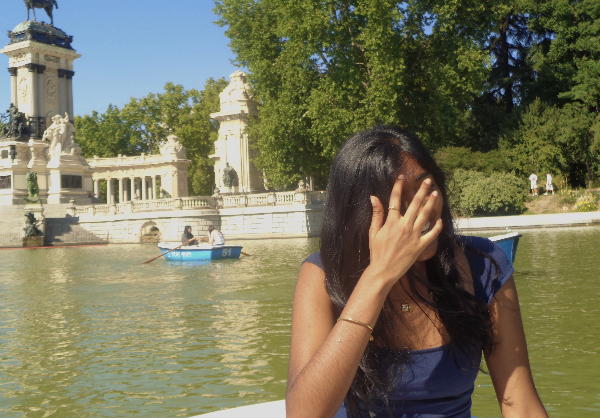
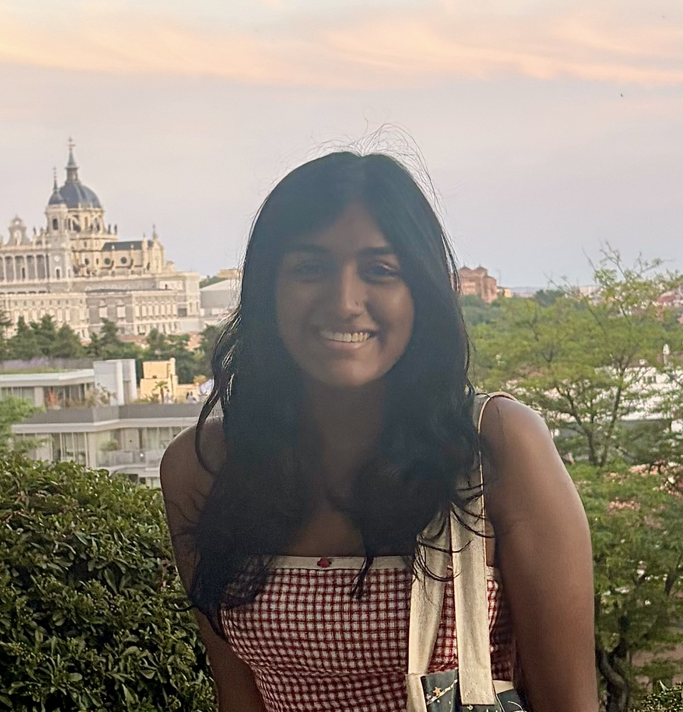
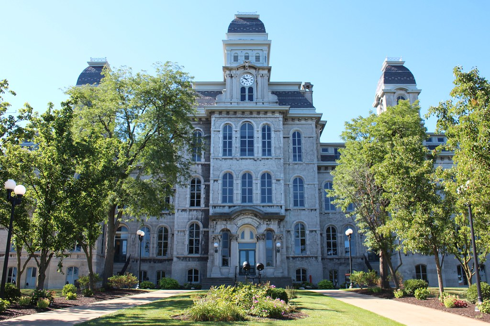

One of the college experiences I looked forwards to most growing up was getting the chance to complete a study abroad program. I finally was able to fulfill that dream this past summer by completing a summer semester in Madrid for one month. Even though the time frame was much more limited than a traditional fall or spring semester, I still feel like I gained a true experience and learned things I never would have known while being entirely immersed in Spanish culture for the month. This website contains my fondest memories, student recommendation, and overall experiences I have learned from in case studying in Madrid was something you might consider as well.

My name is Nadia Kurian and I currently a senior at Syracuse University studying Applied Data Analysis. Traveling has always been such a huge part of my life; I even got my first passport when I was a couple months old. Since visiting vaslty different environments and experiencing different culures was always part of my growing up, I couldn't wait to get the chance to do it on my own. Especially through an authentic abroad program where you aren't always going to be around tourists and resorts the whole time.
After I completed my freshman year at this Syracuse, I took a gap year before deciding to return. Do to this change in pace, my schedule completely changed and I was devastated thinking that I would not longer get the chance to study abroad like I had always wanted. However, I talked with my advisor and leared that Syracuse offers study abroad programs for summer semesters as well. After looking at the extensive options, I found the Madrid Summer Program, and immediately worked on sending in my application.
There were three main factors I considered while decided which location I wanted to travel to over the summer: langauge, period of time, and type of studies. Syrcause has summer program in three different continents and several countries. While English is my first language, I have always wanted to get better at Spanish. I had been taking classes since I was in second grade, and continued through my freshman year of college. I have the basics down, and even more complex vocabulary I can understand when people speak to me. However, I had never been in a setting where Spanish was the default for casual conversations. Choosing Madrid already seemed like an amazing option to expand out my fluency on a language I have been passionate to learn for years.
The programs in Asia also caught my eye, seeing as I had never traveled to different countires in Asia other than India, my families home country. The main reason for that was trying to organize a family trip on all our different schedules was difficult when the flight and travel times were so long. I heavily considered the Singapore program, however, the time was double it was for the typical study abroad sessions. Singapore would have required me to stay for 12 weeks, whereas the Madrid courses would only take 6. I had a couple family and professional commitments that clashed with the the longer time frame, and ultimately decided against it.
Finally, I had to choose between taking the traditional abroad university courses, or an international internship. While the internship sounded very appealing, the work did not align much with my course of study, so it seemed not as useful to me. Additionally, taking classes would add to the elective credits I needed. Madrid offered a cross-cultural psychology course that captured my attention, and that was the final sign I needed to realize Madrid was my destination.

If you are interested in the abraod courses offered at Syracuse, here are some of the helpful links that I used when making my decision: